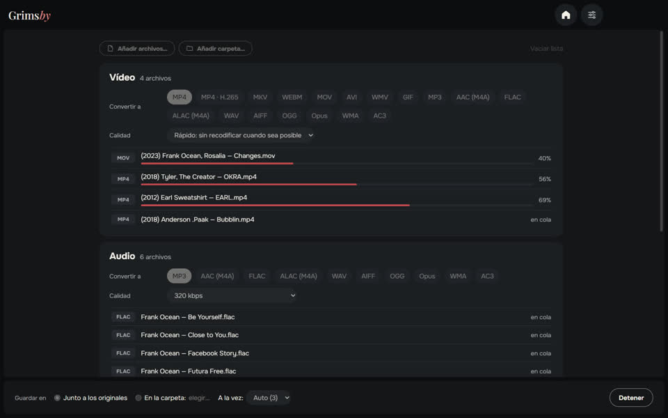
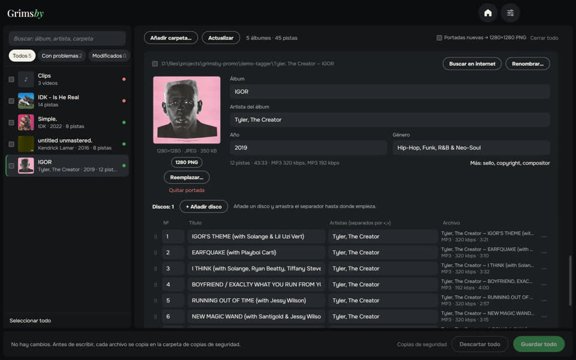

Tres apps gratuitas y sin conexión con el mismo estilo, para quien guarda su propia biblioteca musical.

Grimsby Player
Reproductor sin conexión para tu música y videos descargados
Un reproductor para quienes descargan y coleccionan música. Indica tu carpeta de música y tu colección se convierte en una biblioteca con aspecto de servicio de streaming: álbumes por año, páginas de artistas y videoclips junto a los álbumes. Todo se queda en tu ordenador: sin cuentas, sin suscripciones, sin anuncios.
- Álbumes por año de lanzamiento y páginas de artista con álbumes, videos, conciertos y colaboraciones
- Videoclips, conciertos y películas de álbum vinculados automáticamente
- Reproducción sin pausas, nivelación de volumen y ecualizador de 10 bandas
- Listas de radio inteligentes que se crean solas
- Estadísticas de escucha y de colección, estadísticas de álbum y resumen del año
- Conversor, buscador de duplicados y revisión de la biblioteca integrados

Grimsby Converter
Video, audio, fotos y documentos, convertidos sin conexión
Un conversor de archivos que funciona en tu propio ordenador. Arrastra archivos y carpetas enteras mezclados: se ordenan en grupos, cada grupo con su formato y calidad, y todo se convierte con un botón. No se sube nada a ningún sitio.
- Video, audio, fotos, documentos, hojas de cálculo y presentaciones en una sola ventana
- Carpetas enteras de una vez, ordenadas en grupos automáticamente
- Modo rápido: de MOV a MP4 en segundos sin perder calidad
- Decenas de formatos: desde audio DSD y audiolibros M4B hasta PSD de Photoshop y Keynote
- Los originales no se tocan; sin límites de tamaño ni marcas de agua
- Varios archivos a la vez, tantos como aguante tu procesador


Grimsby Tagger
Editor de etiquetas por lotes: álbumes, portadas, nombres de archivo
Un editor de etiquetas para tu biblioteca musical que trabaja por álbumes, no archivo por archivo. Indica una carpeta: agrupa los archivos en álbumes, muestra cada uno como una tarjeta con su portada y resalta lo que está mal. Arréglalo todo y guárdalo con un botón.
- Los álbumes se ordenan solos: discos, ediciones y archivos sueltos
- Problemas a la vista: campos vacíos, valores mezclados, portadas que faltan, codificación rota
- Arreglos en un clic a partir de nombres de archivos y carpetas
- Busca el álbum en internet y empareja sus pistas con tus archivos
- Renombra archivos y carpetas con una plantilla, con opción de deshacer
- También videos: MP4, MKV, MOV y más — etiquetas y portadas, sin recodificar
